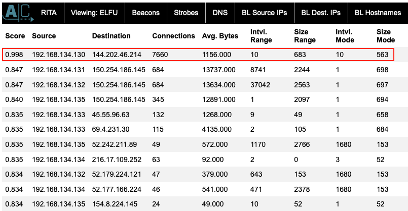

Determine Compromised System#
Terminal Hint: Sparkle Redberry - Xmas Cheer Laser
Request#
The attacks don't stop!
Can you help identify the IP address of the malware-infected system using these Zeek logs?
For hints on achieving this objective, please visit the Laboratory and talk with Sparkle Redberry.
Video#
Resources#
Solution#
With a difficulty rating of only two christmas trees we aren't really supposed to download and install RITA, which is probably why the Zeek logs archive contains a set of static web pages that simulate a RITA web interface. That said, one of the properties of a malware-infected system is beaconing activity as the malware communicates back to a command and control or C2 server.
Active Countermeasures' blog post titled Threat Hunting – Simplifying The Beacon Analysis Process provides the following information on how RITA can help find beaconing activity: "RITA performs an extensive list of security checks, but one of the most unique is a beacon analysis. RITA breaks out the analysis based on sets of IP addresses. All communications are scrutinized for repeating intervals and even attempts to skew the results. The most important column is the first one, which is labeled “Score”, as this gives a score from 0-1 on the likelihood of communications between the two systems being a beacon.".
Open up the static version of the RITA web interface and navigate to the 'Beacons' section.

The 'Score' column in the 'Beacons' section is already sorted in descending order so the first line with a score of 0.998 is almost certainly beaconing activity originating from IP address 192.168.134.130. This is also confirmed on the 'Long Connections' section where the same 192.168.134.130 IP is listed as having the longest connection duration as well.
Answer#
IP: 192.168.134.130
Response#
None